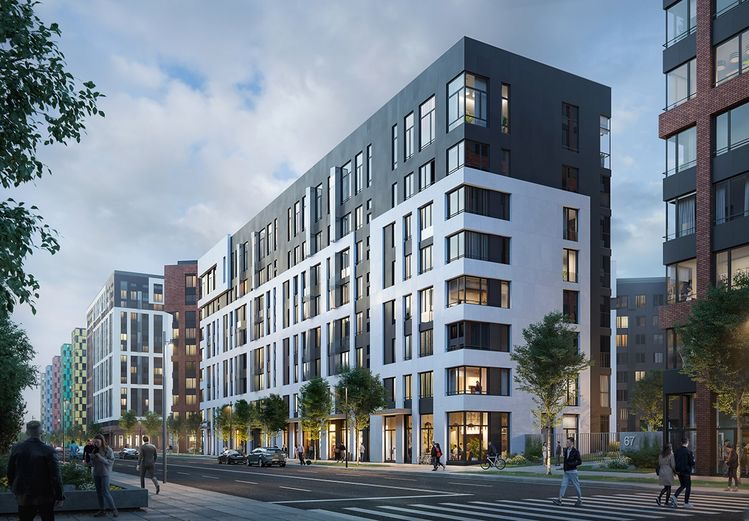

Будівництво торгівельних комплексів
"ТОВ Закарпаття-Брухт" є відомим розробником та будівельною компанією в Україні, спеціалізуючоюся на будівництві торгівельних комплексів. Компанія має багатий досвід в будівництві, що дозволяє їй успішно втілювати найскладніші проекти в життя.
Однією з переваг компанії є її високий рівень професіоналізму та знання будівельної справи, що дозволяє їй ефективно виконувати роботи будь-якої складності. Крім того, компанія має високий рівень відповідальності та дотримання термінів виконання робіт, що дозволяє їй завжди задовольнити потреби своїх клієнтів.
"ТОВ Закарпаття-Брухт" забезпечує повний цикл будівництва торгівельних комплексів, починаючи з проектування та розробки дизайну, закінчуючи здачею об'єкту в експлуатацію та післягарантійним обслуговуванням. Компанія використовує тільки найсучасніші технології та матеріали, що гарантує високу якість будівництва та тривалий термін експлуатації об'єктів.
Будівництво житлових комплексів
"ТОВ Закарпаття-Брухт" є досвідченим розробником та будівельною компанією в Україні, яка спеціалізується на будівництві житлових комплексів. Компанія має репутацію надійного партнера з багатим досвідом у будівництві житлових приміщень різної складності та масштабу.
Однією з переваг "ТОВ Закарпаття-Брухт" є її високий рівень професіоналізму та знання будівельної справи. Компанія працює з високоякісними матеріалами та технологіями, що гарантує високу якість будівництва та довговічність будинків. Крім того, компанія завжди дотримується усіх норм і стандартів будівництва, що дозволяє їй забезпечувати безпеку та комфорт мешканців.
Компанія "ТОВ Закарпаття-Брухт" надає повний цикл будівництва житлових комплексів, від проектування та розробки дизайну до здачі будівель в експлуатацію та післягарантійного обслуговування. Компанія дотримується всіх термінів виконання робіт та гарантує високу якість та професійність при виконанні будівельних робіт.

Будівицтво та ремонт доріг
"ТОВ Закарпаття-Брухт" є професійною будівельною компанією, яка спеціалізується на будівництві та ремонті доріг. Компанія має репутацію високоякісного підрядника та досвід у реалізації проектів різної складності та масштабу.
Однією з головних переваг "ТОВ Закарпаття-Брухт" є високий рівень професіоналізму та технічної компетентності її співробітників. Компанія працює з сучасним обладнанням та використовує передові технології для забезпечення високої якості будівництва та ремонту доріг. Крім того, компанія завжди дотримується всіх норм і стандартів у будівництві та ремонті доріг, що забезпечує безпеку та комфорт користувачів доріг.
Компанія "ТОВ Закарпаття-Брухт" надає повний цикл робіт з будівництва та ремонту доріг, від проектування та розробки дизайну до здачі доріг в експлуатацію та післягарантійного обслуговування. Компанія виконує роботи з будівництва нових доріг, ремонту та реконструкції існуючих доріг, а також забезпечує будівництво додаткової інфраструктури, такої як мостові споруди та підземні переходи.